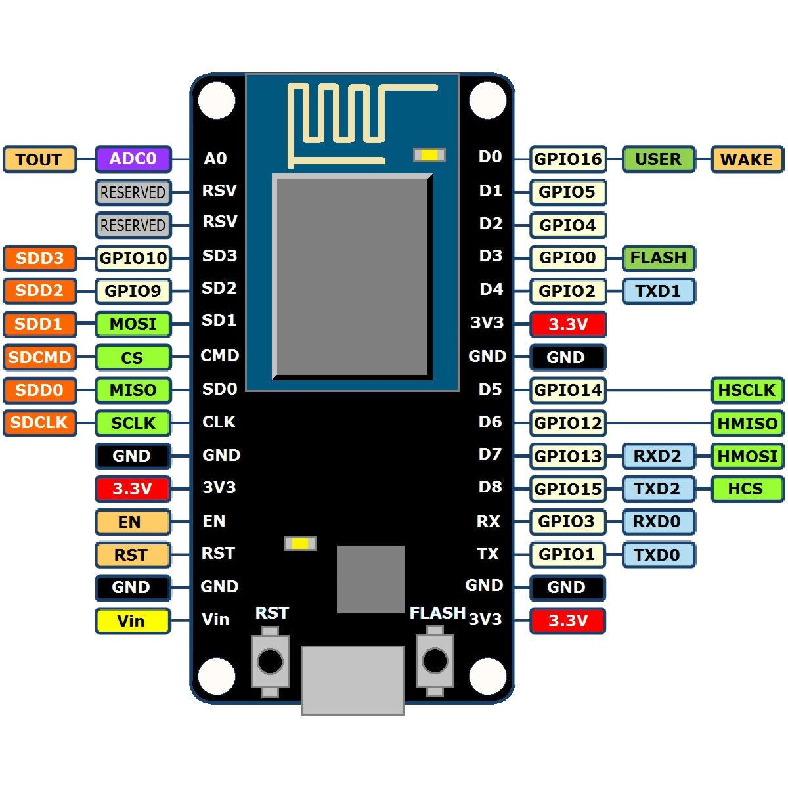
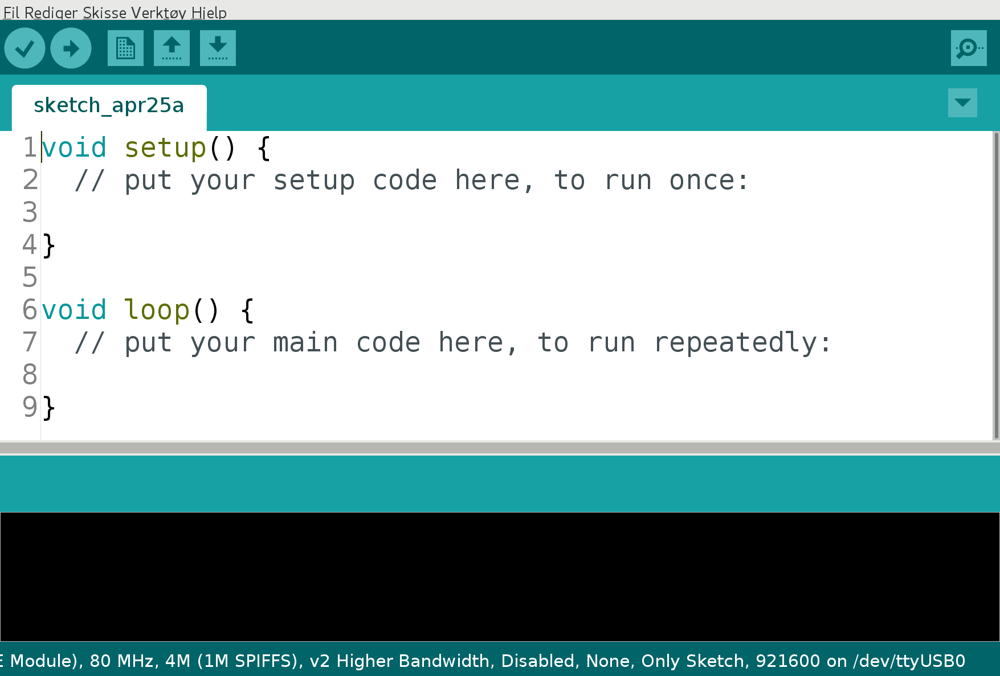

Trygve Laugstøl <trygvis@trygvis.io>
| Chip | CPU | Freq | RAM | Flash | Price |
|---|---|---|---|---|---|
| nRF52810 | Cortex-M4 | 64 M | Hz 24k | 192k | $1.88 |
| nRF52832 | Cortex-M4 | F | 32k | 256k | $2.54 |
| 64k | 512k | $2.59 | |||
| nRF52840 | Cortex-M4 | F | 256k | 1024k | $3.85 |
| Module | Data Rate | Price |
|---|---|---|
| RN2483A-I/RM104 | $12.05 @ 250 | |
| CMWX1ZZABZ-078 | SX1276 | $10.74 @ 1000 |
| RF-LORA-868-SO | SX1272 | $16.55 @ 1000 |
| Chip | Price |
|---|---|
| SX1281 | $3.23 |
| SX1272 | $4.25 |
| SX1276 | $4.25 |
| SX1279 | $4.74 |
| Module | Price |
|---|---|
| uBlox SARA-N210 | ~$10 @ 100 |
| Sierra Wireless HL7800_1103933 | $15.72 |
| Chip | CPU | Freq | ROM | RAM | Price |
|---|---|---|---|---|---|
| ESP8266 | Tensilica L106 | 160 MHz | N/A | ~50 kB | < $1 |
ESP32 - dual cpu, Wi-Fi, Bluetooth 4 ESP32-D0WDQ6 2x Xtensa @ 160MHz $ 4.53 @ 10
| State | Current usage |
|---|---|
| Off | 0.5 µA |
| Deep sleep with RTC | 20 µA |
| Light sleep (with Wi-Fi) | 1 mA |
| Sleep with peripherials | 15 mA |
| TX | 170 mA |


foo/
foo.ino
config.h// Usage ESP.restart();
Agents have one of two roles:
foo/bar/bazfoo/bar/?foo/#The temperature sensor:
myapp/$device-id/temperaturemyapp/$device-id/humiditymyapp/$device-id/altertmyapp/$device-id/commandThe central application:
myapp/#/temperaturemyapp/#/humiditymyapp/$device-id/commandEnten må den holdes rett etter “## MQTT - The protocol - MQTT Topic” ellers kanskje flyttes etter “patterns”.
The central application is split:
myapp/#/temperaturemyapp/#/humiditymyapp/$device-id/altertmyapp/$device-id/commandMessage is kept by the server even after disconnect
CONNECTPUBLISH
RETAIN$app/$device/temperature22.3DISCONNECTLater on:
SUBSCRIBE
$app/#/temperaturePUBLISH
$app/$device/temperature22.3Message sent when you disconnect
Client #1:
CONNECT
WILL TOPIC: $app/$device/onlineWILL PAYLOAD: 0PUBLISH
$app/$device/online1DISCONNECTBroker
PUBLISH
$app/$device/online0Må utvides
Explain:
PubSubClient is our MQTT client implementation.
Measure round trip time/latency. Measure UDP, TCP. Measure when the packet size is greater than the MTU
Notice variations in RTT
Wikipedia “Internet of Things”↩